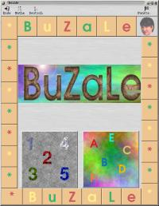

Einführung
Spielaufbau
Installation
Konfiguration
EinführungBuZaLe - der Titel ist gleich Programm.Dieses Spiel dient dazu Kindern, begleitend zur Schule, die Buchstaben und Zahlen näher zu bringen. Der Spielablauf ist hinsichtlich der gestellten Aufgaben frei konfigurierbar und kann dem aktuellen Wissensstand angepaßt werden. Die zu lösenden Aufgaben werden in Form von Bild.- und Sounddateien vorgegeben. Dadurch ist es möglich eigene Bilder zusammen mit dem Kind auszusuchen, mit einer individuellen Sounddatei zu versehen und dann in das Spiel einzubinden.
Die Farbe und Größe der Zeichen auf dem Bildschirm können individuell angepaßt werden. SpielaufbauDer Spielaufblauf besteht aus folgenden Spielstufen:
|
 |
[section1]
Schlüsselwort1 = Parameter
Schlüsselwort2 = Parameter
[section2]
Schlüsselwort1 = Parameter
Schlüsselwort2 = Parameter
Es sind folgende Sections vorgesehen:| [Allgemein] | Allgemeine Einstellungen, die für das ganze Spiel gelten. Zum Beispiel: Farben, Schriftarten, Suchpfade |
| [START] | Bilder und Sounddateien, die beim Spielstart (Intro) angezeigt werden sollen. |
| [DA] .. [DE] | Bilder und Sounddateien, die in den einzelnen Spielstufen im Zweig 'Deutsch' angezeigt werden sollen. |
| [MA] .. [ME] | Bilder und Sounddateien, für die Mathe-Aufgaben |
| [ENDE] | Files in der der aktuelle Punktestand abgespeichert werden kann (Highscore-Liste) |
[DA]
[D1]
[DE]
name = Vogel Ofen
Die Bild.- und Sounddateien 'Vogel' und 'Ofen' sind für die Sections [DA], [D1], [DE] definiert.
| [Allegmein] | ||
| Font1 | = | Name des Default-Zeichensatzes |
| Font2 | = | Zeichensatz des Eingabefeldes und des Leveltextes |
| Color1 | = | Farbe 1 für Tastenbeschriftung |
| Color2 | = | Farbe 2 für Tastenbeschriftung |
| Color3 | = | Farbe 3 für Tastenbeschriftung und Farbe des Leveltextes |
| Color4 | = | Farbe des Lösungstextes |
| Color5 | = | Default-Hintergrundfarbe der Tasten |
| Color6 | = | Markierungsfarbe der Tasten (Hilfe) |
| BildPfad | = | Verzeichnis in dem die Bilder (xxx.xpm) abgelegt sind. |
| SoundPfad | = | Verzeichnis in dem die Sounddateien (xxx.wav) abgelegt sind. |
| SoundPrg | = | Programm, daß zur Soundausgabe aufgerufen werden soll, z.B. 'play' |
| OK | = | Sounddateien, die bei einer richtigen
Antwort abgespielt werden sollen. (Filename ohne Endung .wav) |
| NOK | = | Sounddateien, die bei einer falschen
Antwort abgespielt werden sollen. ( Filename ohne Endung .wav) |
| [START] | ||
| Sound | = | Sounddatei, die beim Starten des Levels
abgespielt werden soll (Filename ohne Endung .wav) |
| Namen | = | Dateien, die im Intro in zufälliger
Reihenfolge abgespielt bzw. angezeigt
werden sollen (Filenamen ohne Endung .wav und .xpm) |
| [DA] [D1] D1..D3 müssen [D2] nicht zwingend [D3] vorhanden sein. [DE] | ||
| Titel | = | Name der Spielstufe (wird beim Wechsel in das entsprechende Level angezeigt) |
| Sound | = | Sounddatei, die beim Starten des Levels
abgespielt werden soll (Filename ohne Endung .wav) |
| AnzZeichen | = | Anzahl der Zeichen, die eingegeben
werden müssen z:B.: 1 = erster Buchstabe 2 = die ersten beiden Buchstaben -1 = ganzes Lösungswort |
| Bonus | = | Kennung für Bonuslevel 0 = normales Level; es müssen 20 Aufgaben gelöst werden. 1 = Bonus Level; möglichst viele Aufgaben in einer bestimmten Zeit lösen |
| Zeit | = | Zeit in Sekunden in der die Aufgaben im Bonus-Level gelöst werden können |
| Namen | = | Liste mit Bild.- bzw. Sounddateien (Filenamen ohne Endung .wav und .xpm) |
| [MA] [M1] D1..D3 müssen [M2] nicht zwingend [M3] vorhanden sein. [ME] | ||
| Titel | = | Name der Spielstufe (wird beim Wechsel in das entsprechende Level angezeigt) |
| Sound | = | Sounddatei, die beim Starten des Levels
abgespielt werden soll (Filename ohne Endung .wav) |
| AnzZeichen | = | immer -1 |
| Bonus | = | Kennung für Bonuslevel 0 = normales Level; es müssen 20 Aufgaben gelöst werden. 1 = Bonus Level; möglichst viele Aufgaben in einer bestimmten Zeit lösen |
| Zeit | = | Zeit in Sekunden in der die Aufgaben im Bonus-Level gelöst werden können |
| Namen | = | Liste mit Bild.- bzw. Sounddateien (Filenamen ohne Endung .wav und .xpm) |
| [ENDE] | ||
| Mathe | = | Datei für Highscore-Liste (Mathe) z.B. /var/BuZaLe_Mathe |
| Deutsch | = | Datei für Highscore-Liste (Deutsch) z.B. /var/BuZaLe_Deutsch |